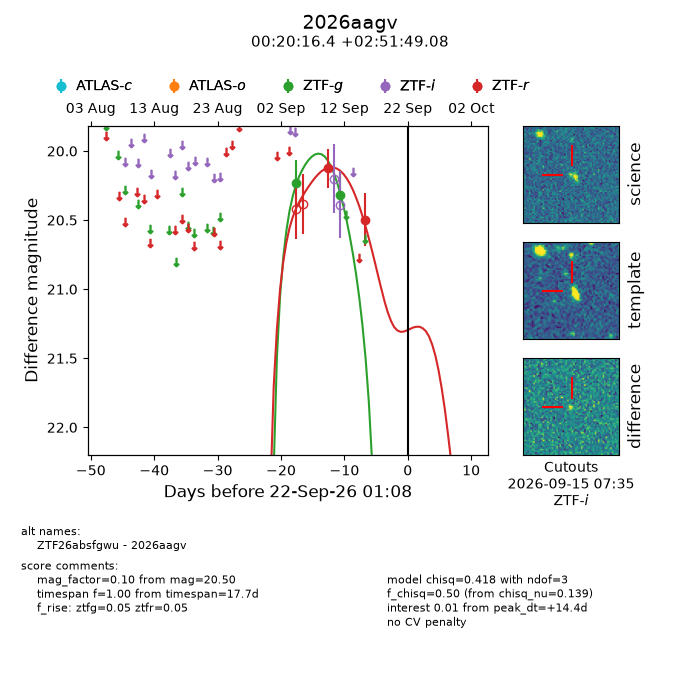
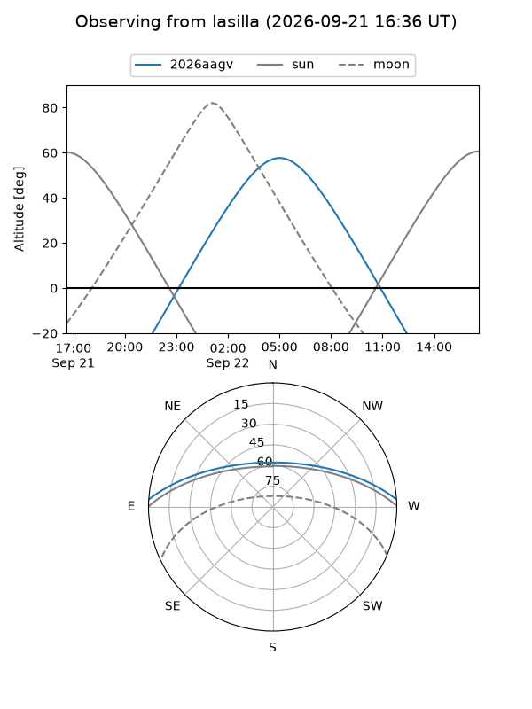
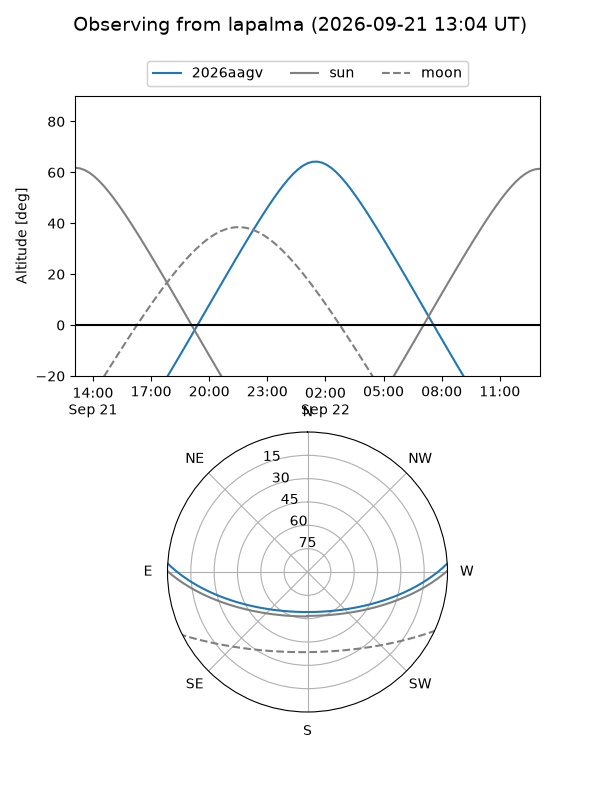
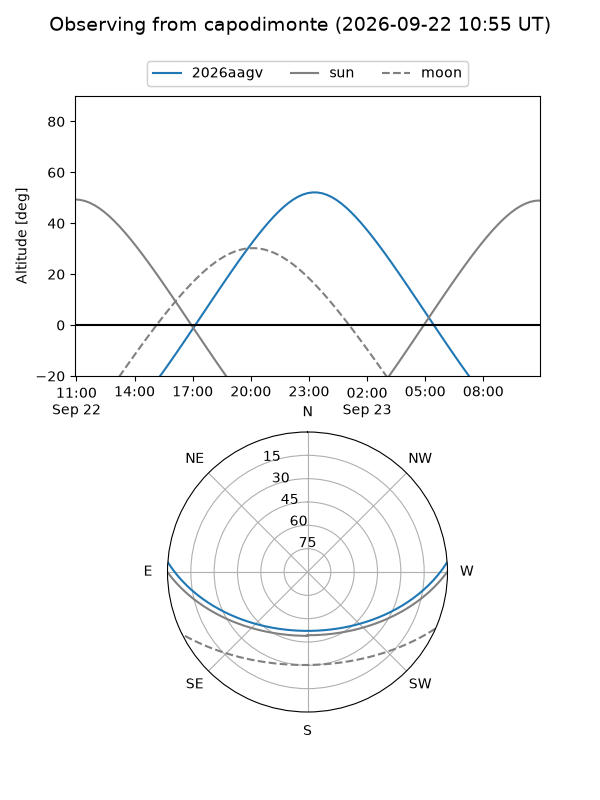
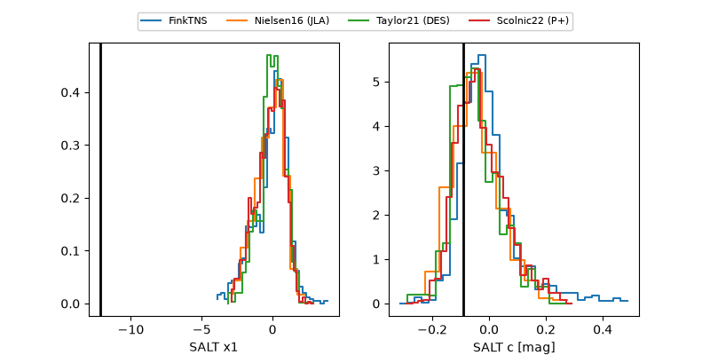

2026aagv
Target 2026aagv at 2026-09-22 12:35
Aliases and brokers:
FINK-ZTF: ztf.fink-portal.org/ZTF26absfgwu
Lasair-ZTF: lasair-ztf.lsst.ac.uk/objects/ZTF26absfgwu
ALeRCE-ZTF: alerce.online/object/ZTF26absfgwu
YSE-PZ: ziggy.ucolick.org/yse/transient_detail/2026aagv
TNS name: wis-tns.org/object/2026aagv
Direct TNS query: direct search
alt names
ZTF26absfgwu (ztf,fink_ztf)
2026aagv (tns,yse)
Coordinates:
equatorial (ra, dec) = 5.0682,+2.86363
equatorial (HMS+DMS) = 00:20:16.37,+02:51:49.08
galactic (l, b) = (107.6540,-59.08055)
Flags:
TNS type: nan
peak dt: +14.9
Photometry:
last ztfg=20.32, ztfr=20.50
2 ztfg, 2 ztfr detections
Lightcurve

Visibility



Additional plots
